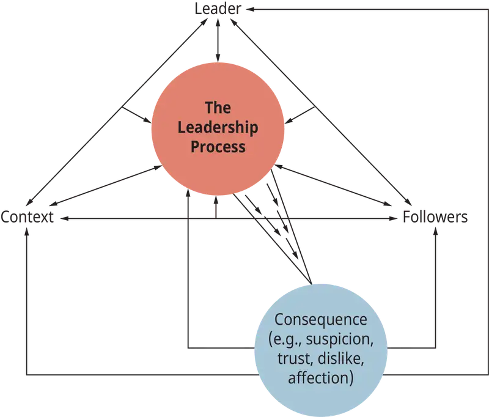
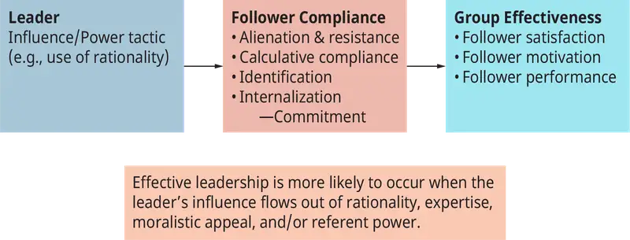
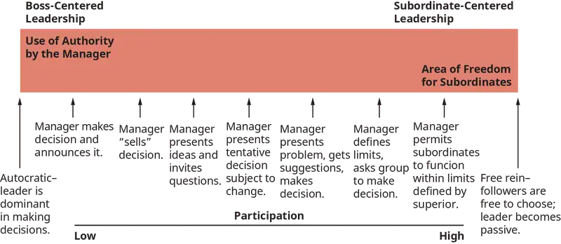
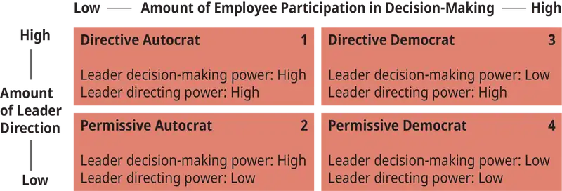
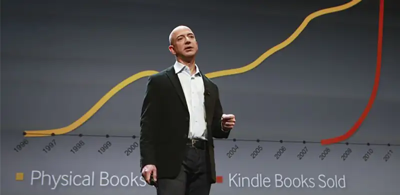
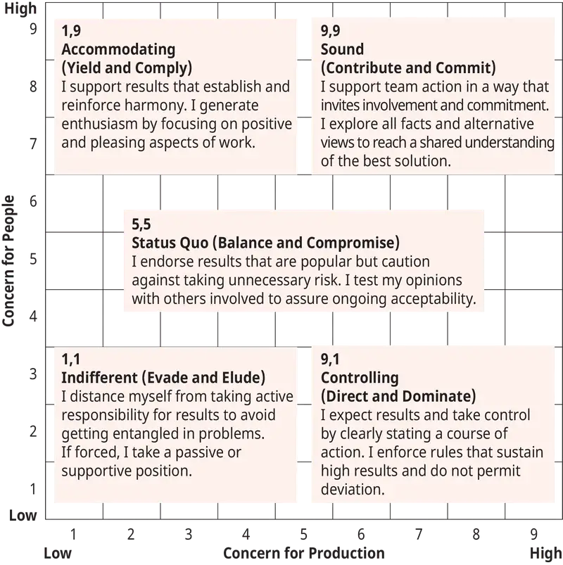
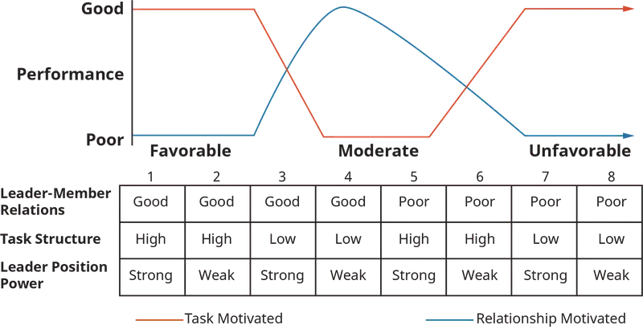
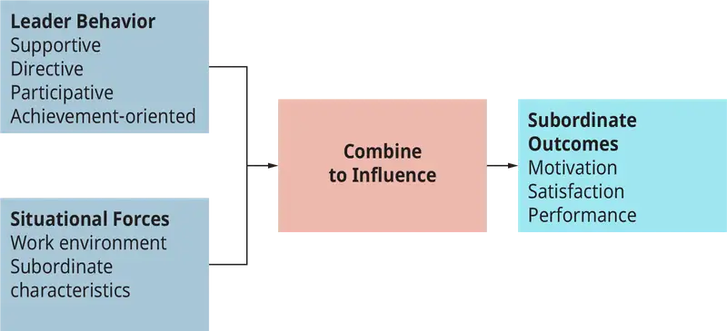
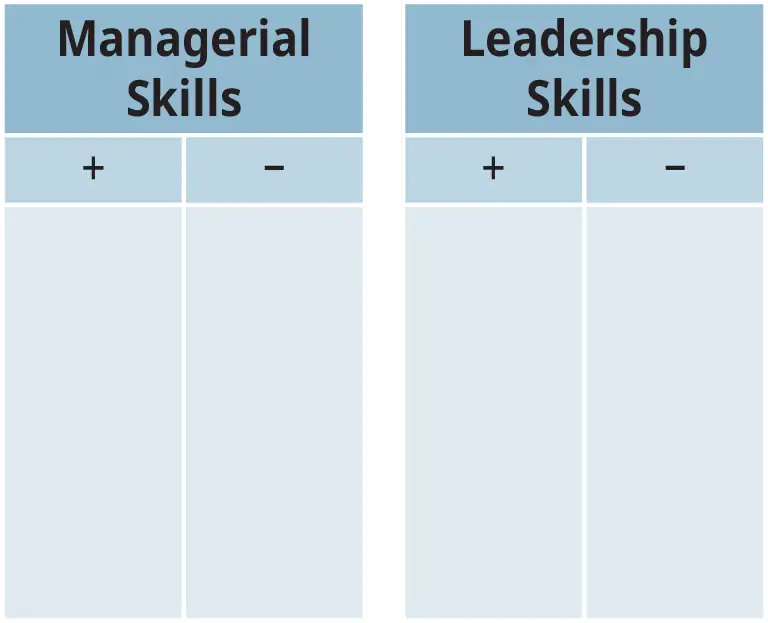

Chapter 13: Leadership¶
Introduction¶
Learning Outcomes
After reading this chapter, you should be able to answer these questions:
- What is the nature of leadership and the leadership process?
- What are the processes associated with people coming to leadership positions?
- How do leaders influence and move their followers to action?
- What are the trait perspectives on leadership?
- What are the behavioral perspectives on leadership?
- What are the situational perspectives on leadership?
- What does the concept “substitute for leadership” mean?
- What are the characteristics of transactional, transformational, and charismatic leadership?
- How do different approaches and styles of leadership impact what is needed now?
Exploring Managerial Careers: John Arroyo: Springfield Sea Lions
John Arroyo is thrilled with his new position as general manager of the Springfield Sea Lions, a minor league baseball team. Arroyo has been a baseball fan all of his life, and now his diligent work and his degree in sports management are paying off.
Arroyo knew he had a hard act to follow. The general manager whom John replaced, “T.J.” Grevin, was a much-loved old-timer who had been with the Sea Lions since their inception 14 years ago. John knew it would be difficult for whoever followed T.J., but he didn’t realize how ostracized and powerless he would feel. He tried a pep talk: “I’m the general manager—the CEO of this ball club! In time, the staff will respect me.” [Not a very good pep talk!]
After his first season ends, Arroyo is discouraged. Ticket and concession sales are down, and some long-time employees are rumored to be thinking about leaving. If John doesn’t turn things around, he knows his tenure with the Sea Lions will be short.
Questions: Is John correct in assuming that the staff will learn to respect him in time? What can John do to earn the loyalty of his staff and improve the ball club’s performance?
Outcomes: During the winter, John thinks long and hard about how he can earn the respect of the Sea Lions staff. Before the next season opener, John announces his plan: “So I can better understand what your day is like, I’m going to spend one day in each of your shoes. I’m trading places with each of you. I will be a ticket taker, a roving hot dog vendor, and a janitor. And I will be a marketer, and an accountant—for a day. You in turn will have the day off so you can enjoy the game from the general manager’s box.” The staff laughs and whistles appreciatively. Then the Springfield mascot, Sparky the Sea Lion, speaks up: “Hey Mr. Arroyo, are you going to spend a day in my flippers?” “You bet!” says John, laughing. The entire staff cheers.
John continues. “At the close of the season, we will honor a staff member with the T.J. Grevin Award for outstanding contributions to the Sea Lions organization. T.J. was such a great guy, it’s only right that we honor him.” The meeting ends, but John’s staff linger to tell him how excited they are about his ideas. Amidst the handshakes, he hopes that this year may be the best year yet for the Sea Lions.
According to Louise Axon, director of content strategy, and her colleagues at Harvard Business Publishing, in seeking management talent, leadership is an urgently needed quality in all managerial roles. Good leaders and good leadership are rare. Harvard management professor John P. Kotter notes that “there is a leadership crisis in the U.S. today,” and the late USC Professor Warren Bennis states that many of our organizations are overmanaged and underled.
13.1 The Nature of Leadership¶
- What is the nature of leadership and the leadership process?
The many definitions of leadership each have a different emphasis. Some definitions consider leadership an act or behavior, such as initiating structure so group members know how to complete a task. Others consider a leader to be the center or nucleus of group activity, an instrument of goal achievement who has a certain personality, a form of persuasion and power, and the art of inducing compliance. Some look at leadership in terms of the management of group processes. In this view, a good leader develops a vision for the group, communicates that vision, orchestrates the group’s energy and activity toward goal attainment, “[turns] a group of individuals into a team,” and “[transforms] good intentions into positive actions.”
Leadership is frequently defined as a social (interpersonal) influence relationship between two or more persons who depend on each other to attain certain mutual goals in a group situation. Effective leadership helps individuals and groups achieve their goals by focusing on the group’s maintenance needs (the need for individuals to fit and work together by having, for example, shared norms) and task needs (the need for the group to make progress toward attaining the goal that brought them together).
Leader versus Manager¶
The two dual concepts, leader and manager, leadership and management, are not interchangeable, nor are they redundant. The differences between the two can, however, be confusing. In many instances, to be a good manager one needs to be an effective leader. Many CEOs have been hired in the hope that their leadership skills, their ability to formulate a vision and get others to “buy into” that vision, will propel the organization forward. In addition, effective leadership often necessitates the ability to manage—to set goals; plan, devise, and implement strategy; make decisions and solve problems; and organize and control. For our purposes, the two sets of concepts can be contrasted in several ways.
First, we define the two concepts differently. In Management and Organizational Behavior, we defined management as a process consisting of planning, organizing, directing, and controlling. Here we define leadership as a social (interpersonal) influence relationship between two or more people who are dependent on each another for goal attainment.
Second, managers and leaders are commonly differentiated in terms of the processes through which they initially come to their position. Managers are generally appointed to their role. Even though many organizations appoint people to positions of leadership, leadership per se is a relationship that revolves around the followers’ acceptance or rejection of the leader. Thus, leaders often emerge out of events that unfold among members of a group.
Third, managers and leaders often differ in terms of the types and sources of the power they exercise. Managers commonly derive their power from the larger organization. Virtually all organizations legitimize the use of certain “carrots and sticks” (rewards and punishments) as ways of securing the compliance of their employees. In other words, by virtue of the position that a manager occupies (president, vice president, department head, supervisor), certain “rights to act” (schedule production, contract to sell a product, hire and fire) accompany the position and its place within the hierarchy of authority. Leaders can also secure power and the ability to exercise influence using carrots and sticks; however, it is much more common for leaders to derive power from followers’ perception of their knowledge (expertise), their personality and attractiveness, and the working relationship that has developed between leaders and followers.
From the perspective of those who are under the leader’s and manager’s influence, the motivation to comply often has a different base. The subordinate to a manager frequently complies because of the role authority of the manager, and because of the carrots and sticks that managers have at their disposal. The followers of a leader comply because they want to. Thus, leaders motivate primarily through intrinsic processes, while managers motivate primarily through extrinsic processes.
Finally, it is important to note that while managers may be successful in directing and supervising their subordinates, they often succeed or fail because of their ability or inability to lead. As noted above, effective leadership often calls for the ability to manage, and effective management often requires leadership.
Concept Check
What is the nature of leadership and the leadership process?
13.2 The Leadership Process¶
- What are the processes associated with people coming to leadership positions?
Leadership is a process, a complex and dynamic exchange relationship built over time between leader and follower and between leader and the group of followers who depend on each other to attain a mutually desired goal. There are several key components to this “working relationship”: the leader, the followers, the context (situation), the leadership process per se, and the consequences (outcomes) (see Figure 13.3). Across time, each component interacts with and influences the other components, and whatever consequences (such as leader-follower trust) are created influence future interactions. As any one of the components changes, so too will leadership.

The Leader¶
Leaders are people who take charge of or guide the activities of others. They are often seen as the focus or orchestrater of group activity, the people who set the tone of the group so that it can move forward to attain its goals. Leaders provide the group with what is required to fulfill its maintenance and task-related needs. (Later in the chapter, we will return to the “leader as a person” as part of our discussion of the trait approach to leadership.)
The Follower¶
The follower is not a passive player in the leadership process. Edwin Hollander, after many years of studying leadership, suggested that the follower is the most critical factor in any leadership event. It is, after all, the follower who perceives the situation and comes to define the needs that the leader must fulfill. In addition, it is the follower who either rejects leadership or accepts acts of leadership by surrendering his power to the leader to diminish task uncertainty, to define and manage the meaning of the situation to the follower, and to orchestrate the follower’s action in pursuit of goal attainment.
The follower’s personality and readiness to follow determine the style of leadership that will be most effective. For example, individuals with an internal locus of control are much more responsive to participative styles of leadership than individuals with an external locus of control. Individuals with an authoritarian personality are highly receptive to the effectiveness of directive acts of leadership. It is the followers’ expectations, as well as their performance-based needs, that determine what a leader must do in order to be effective.
The strength of the follower’s self-concept has also been linked to the leadership process. High-self-esteem individuals tend to have a strong sense of self-efficacy, that is, a generalized belief they can be successful in difficult situations. They therefore tend to be strongly motivated to perform and persist in the face of adversity. The high-self-esteem follower tends to be responsive to participative styles of leadership. Low-self-esteem individuals, who doubt their competence and worthiness and their ability to succeed in difficult situations, function better with supportive forms of leadership. This helps them deal with the stress, frustration, and anxiety that often emerge with difficult tasks. Followers without a readiness to follow, limited by their inability to perform and lack of motivation and commitment, usually need more directive forms of leadership.
Follower behavior plays a major role in determining what behaviors leaders engage in. For example, followers who perform at high levels tend to cause their leaders to be considerate in their treatment and to play a less directive role. Followers who are poor performers, on the other hand, tend to cause their leaders to be less warm toward them and to be more directive and controlling in their leadership style.
The Context¶
Situations make demands on a group and its members, and not all situations are the same. Context refers to the situation that surrounds the leader and the followers. Situations are multidimensional. We discuss the context as it pertains to leadership in greater detail later in this chapter, but for now let’s look at it in terms of the task and task environment that confront the group. Is the task structured or unstructured? Are the goals of the group clear or ambiguous? Is there agreement or disagreement about goals? Is there a body of knowledge that can guide task performance? Is the task boring? Frustrating? Intrinsically satisfying? Is the environment complex or simple, stable or unstable? These factors create different contexts within which leadership unfolds, and each factor places a different set of needs and demands on the leader and on the followers.
The Process¶
The process of leadership is separate and distinct from the leader (the person who occupies a central role in the group). The process is a complex, interactive, and dynamic working relationship between leader and followers. This working relationship, built over time, is directed toward fulfilling the group’s maintenance and task needs. Part of the process consists of an exchange relationship between the leader and follower. The leader provides a resource directed toward fulfilling the group’s needs, and the group gives compliance, recognition, and esteem to the leader. To the extent that leadership is the exercise of influence, part of the leadership process is captured by the surrender of power by the followers and the exercise of influence over the followers by the leader. Thus, the leader influences the followers and the followers influence the leader, the context influences the leader and the followers, and both leader and followers influence the context.
The Consequences¶
A number of outcomes or consequences of the leadership process unfold between leader, follower, and situation. At the group level, two outcomes are important:
- Have the group’s maintenance needs been fulfilled? That is, do members of the group like and get along with one another, do they have a shared set of norms and values, and have they developed a good working relationship? Have individuals’ needs been fulfilled as reflected in attendance, motivation, performance, satisfaction, citizenship, trust, and maintenance of the group membership?
- Have the group’s task needs been met? That is, there are also important consequences of the leadership process for individuals: attendance, motivation, performance, satisfaction, citizenship, trust, and maintenance of their group membership.
The leader-member exchange (LMX) theory of the leadership process focuses attention on consequences associated with the leadership process. The theory views leadership as consisting of a number of dyadic relationships linking the leader with a follower. A leader-follower relationship tends to develop quickly and remains relatively stable over time. The quality of the relationship is reflected by the degree of mutual trust, loyalty, support, respect, and obligation. High- and low-quality relationships between a leader and each of his followers produce in and out groups among the followers. Members of the in group come to be key players, and high-quality exchange relationships tend to be associated with higher levels of performance, commitment, and satisfaction than are low-quality exchange relationships. Attitudinal similarity and extroversion appear to be associated with a high-quality leader-member relationship.
The nature of the leadership process varies substantially depending on the leader, the followers, and the situation and context. Thus, leadership is the function of an interaction between the leader, the follower, and the context.
The leadership context for the leader of a group of assembly line production workers differs from the context for the leader of a self-managing production team and from the context confronted by the lead scientists in a research laboratory. The leadership tactics that work in the first context might fail miserably in the latter two.
Catching the Entrepreneurial Spirit: How a Start-Up Finds the Right Leader
Start-ups, by their very nature, require innovation to bring new products and services to market. Along with establishing a new brand or product, the leader has to develop the relationships and processes that make a company succeed, or risk its early demise. While leading an established firm has its challenges, a start-up requires even more from a leader.
How critical is leadership to a start-up? Ask the four cofounders of the now-defunct PYP (Pretty Young Professionals), a website founded as a source of information for young professional women. What began as four young professional women working on a new start-up ended with hurt feelings and threats of legal action. In 2010, Kathryn Minshew, Amanda Pouchot, Caroline Ghosn, and Alex Cavoulacos decided to create the website and Minshew was named CEO (Cohan 2011a). Lines blurred about Minshew’s authority and the ultimate look, feel, and direction of the website. Ideals about shared leadership, where the company was going, and how it was going to get there ultimately got lost in the power shuffle. By June 2011, passwords were changed and legal actions began, and in August Minshew and Cavoulacos left altogether (Cohan 2011b).
When the legal haggling from PYP was over, Alex Cavoulacos and Kathryn Minshew, joined by Melissa McCreery, tried again. But this time, rather than hoping for the best, they put a leadership plan in place. Minshew was named CEO of the new start-up, The Daily Muse, with Cavoulacos as chief operating officer and McCreery as editor in chief. Rather than trusting to luck, the three cofounders based their team positions on strengths and personalities. Cavoulacos and McCreery agreed that Minshew’s outgoing personality and confidence made her the proper choice as CEO (Casserly 2013).
No single trait will guarantee that a person can lead a start-up from idea to greatness, but a survey of successful entrepreneurs does show some common traits. According to David Barbash, a partner at Boston-based law firm Posternak Blankstein & Lund LLP, personality is paramount: “You can have great technology but if you’re not a great communicator it may die in the lab” (Casserly 2013 n.p.). A start-up needs a leader who is confident and willing, if not eager, to face the future. According to Michelle Randall, a principal of Enriching Leadership International, start-up CEOs have to be willing to fundraise and not be too proud to beg (Casserly 2013). Peter Shankman, an entrepreneur and angel investor, says leaders have to be willing to make the hard decisions, even risking being the bad guy (Casserly 2013).
Gary Vaynerchuk credits his success to six factors. Angel investor, social media marketer, and early social media adopter, Vaynerchuk leveraged YouTube in its early years to market wine from the family’s liquor store, eventually increasing sales from $3 million to $60 million a year (Clifford 2017). Gary believes good leaders recognize that they don’t dictate to the market, but rather respond to where it is going. They have respect for and believe in other people, and have a strong work ethic, what Vaynerchuk called a “lunch pail work ethic”: they are willing to put in long hours because they love the work, not the perks. He also stresses that he loves technology and doesn’t fear it, is obsessed with the youth of today, and is optimistic about people and the future of humanity (Vaynerchuk 2017).
Leading a startup requires more than simple management. It requires the right leader for the right company at the right time, which means matching the right management skills with the proper flexibility and drive to keep it all together and moving in the right direction.
Sources:
Casserly, Meghan. 2013. “Rocks, Paper, CEO: Finding The Best Leader For Your Startup.” Forbes. https://www.forbes.com/sites/meghancasserly/2013/01/15/rocks-paper-ceo-finding-the-best-leader-for-your-startup/#16b520cd20a5
Clifford, Catherine. 2017. “Self-made millionaire Gary Vaynerchuk: This is the real secret to success.” CNBC. https://www.cnbc.com/2017/03/13/self-made-millionaire-gary-vaynerchuk-shares-real-secret-to-success.html
Cohan, Peter. 2011a. “A Cautionary Tale: Friendship, Business Ethics, and Bad Breakups (Acts I and II). Forbes. August 9, 2011. https://www.forbes.com/sites/petercohan/2011/08/09/a-cautionary-tale-friendship-business-ethics-and-bad-breakups-acts-i-and-ii/#256d318b2735
Cohan, Peter. 2011b. “A Cautionary Tale: Friendship, Business Ethics, and Bad Breakups (Acts III and IV). Forbes. August 9, 2011. https://www.forbes.com/sites/petercohan/2011/08/09/a-cautionary-tale-friendship-business-ethics-and-bad-breakups-acts-iii-and-iv/3/#66b22dd4a4f6
Vaynerchuk, Gary. 2017. “What Makes Me a Great CEO.” https://www.garyvaynerchuk.com/makes-great-ceo/
- Why would start-up leaders need different leadership qualities than someone managing an established firm?
- Vaynerchuk has been quoted as saying that if you live for Friday, get a different job. How does this apply to successful entrepreneurs?
Concept Check
What are the processes associated with people coming to leadership positions?
13.3 Leader Emergence¶
- How do leaders influence and move their followers to action?
Leaders hold a unique position in their groups, exercising influence and providing direction. Leonard Bernstein was part of the symphony, but his role as the New York Philharmonic conductor differed dramatically from that of the other symphony members. Besides conducting the orchestra, he created a vision for the symphony. In this capacity, leadership can be seen as a differentiated role and the nucleus of group activity.
Organizations have two kinds of leaders: formal and informal. A formal leader is that individual who is recognized by those outside the group as the official leader of the group. Often, the formal leader is appointed by the organization to serve in a formal capacity as an agent of the organization. Jack Welch was the formal leader of General Electric, and Leonard Bernstein was the formal leader of the symphony. Practically all managers act as formal leaders as part of their assigned role. Organizations that use self-managed work teams allow members of the team to select the individual who will serve as their team leader. When this person’s role is sanctioned by the formal organization, these team leaders become formal leaders. Increasingly, leaders in organizations will be those who “best sell” their ideas on how to complete a project—persuasiveness and inspiration are important ingredients in the leadership equation, especially in high-involvement organizations.
Informal leaders, by contrast, are not assigned by the organization. The informal leader is that individual whom members of the group acknowledge as their leader. Athletic teams often have informal leaders, individuals who exert considerable influence on team members even though they hold no official, formal leadership position. In fact, most work groups contain at least one informal leader. Just like formal leaders, informal leaders can benefit or harm an organization depending on whether their influence encourages group members to behave consistently with organizational goals.
As we have noted, the terms leader and manager are not synonymous. Grace Hopper, retired U.S. Navy admiral, draws a distinction between leading and managing: “You don’t manage people, you manage things. You lead people.” Informal leaders often have considerable leverage over their colleagues. Traditionally, the roles of informal leaders have not included the total set of management responsibilities because an informal leader does not always exercise the functions of planning, organizing, directing, and controlling. However, high-involvement organizations frequently encourage their formal and informal leaders to exercise the full set of management roles. Many consider such actions necessary for self-managing work teams to succeed. Informal leaders are acknowledged by the group, and the group willingly responds to their leadership.
Paths to Leadership¶
People come to leadership positions through two dynamics. In many instances, people are put into positions of leadership by forces outside the group. University-based ROTC programs and military academies (like West Point) formally groom people to be leaders. We refer to this person as the designated leader (in this instance the designated and formal leader are the same person). Emergent leaders, on the other hand, arise from the dynamics and processes that unfold within and among a group of individuals as they endeavor to achieve a collective goal.
A variety of processes help us understand how leaders emerge. Gerald Salancik and Jeffrey Pfeffer observe that power to influence others flows to those individuals who possess the critical and scarce resources (often knowledge and expertise) that a group needs to overcome a major problem. They note that the dominant coalition and leadership in American corporations during the 1950s was among engineers, because organizations were engaged in competition based on product design. The power base in many organizations shifted to marketing as competition became a game of advertising aimed at differentiating products in the consumer’s mind. About 10–15 years ago, power and leadership once again shifted, this time to people with finance and legal backgrounds, because the critical contingencies facing many organizations were mergers, acquisitions, hostile takeovers, and creative financing. Thus, Salancik and Pfeffer reason that power and thus leadership flow to those individuals who have the ability to help an organization or group [overcome its critical contingencies]. As the challenges facing a group change, so too may the flow of power and leadership.
Many leaders emerge out of the needs of the situation. Different situations call for different configurations of knowledge, skills, and abilities. A group often turns to the member who possesses the knowledge, skills, and abilities that the group requires to achieve its goals. People surrender their power to individuals whom they believe will make meaningful contributions to attaining group goals. The individual to whom power is surrendered is often a member of the group who is in good standing. As a result of this member’s contributions to the group’s goals, he has accumulated idiosyncrasy credits (a form of competency-based status). These credits give the individual a status that allows him to influence the direction that the group takes as it works to achieve its goals.
It is important to recognize that the traits possessed by certain individuals contribute significantly to their emergence as leaders. Research indicates that people are unlikely to follow individuals who, for example, do not display drive, self-confidence, knowledge of the situation, honesty, and integrity.
Leadership as an Exercise of Influence¶
As we have noted, leadership is the exercise of influence over those who depend on one another for attaining a mutual goal in a group setting. But how do leaders effectively exercise this influence? Social or (interpersonal) influence is one’s ability to effect a change in the motivation, attitudes, and/or behaviors of others. Power, then, essentially answers the “how” question: How do leaders influence their followers? The answer often is that a leader’s social influence is the source of his power.
French and Raven provide us with a useful typology that identifies the sources and types of power that may be at the disposal of leaders:
- Reward power—the power a person has because people believe that they can bestow rewards or outcomes, such as money or recognition that others desire
- Coercive power—the power a person has because people believe that the person can punish them by inflicting pain or by withholding or taking away something that they value
- Referent power—the power a person has because others want to associate with or be accepted by him
- Expert power—the power a person has because others believe that the person has and is willing to share expert knowledge that they need (The concept of resource power extends the idea of expert power to include the power that a person has because others believe that the person possesses and is willing to share resources, such as information, time, or materials that are needed.)
- Legitimate power—the power a person has because others believe that the person possesses the “right” to influence them and that they ought to obey. This right can originate in tradition; in the charisma or appeal of the person; and in laws, institutional roles within society, moralistic appeal, and rationality (that is, logical arguments, factual evidence, reason, and internally consistent positions).
Not all forms of power are equally effective (see Figure 13.5), nor is a leader’s total power base the simple sum of the powers at his disposal. Different types of power elicit different forms of compliance: Leaders who rely on coercive power often alienate followers who resist their influence attempts. Leaders who rely on reward power develop followers who are very measured in their responses to [what?]; the use of rewards often leads people to think in terms of “How much am I getting?” or “How much should I give?” or “Am I breaking even?” The use of referent power produces identification with the leader and his cause. The use of rationality, expert power, and/or moralistic appeal generally elicits commitment and the internalization of the leader’s goals.

Leaders who use referent and expert power commonly experience a favorable response in terms of follower satisfaction and performance. Research suggests that rationality is the most effective influence tactic in terms of its impact on follower commitment, motivation, performance, satisfaction, and group effectiveness.
Reward and legitimate power (that is, relying on one’s position to influence others) produce inconsistent results. Sometimes these powers lead to follower performance and satisfaction, yet they also sometimes fail. Coercive power can result in favorable performance, yet follower and resistance dissatisfaction are not uncommon.
Good leaders, whether formal or informal, develop many sources of power. Leaders who rely solely on their legitimate power and authority seldom generate the influence necessary to help their organization and its members succeed. In the process of building their power base, effective leaders have discovered that the use of coercive power tends to dilute the effectiveness of other powers, while the development and use of referent power tends to magnify the effectiveness of other forms of power. A compliment or reward from a person we like generally has greater value than one from someone we dislike, and punishment from someone we love (such as “tough love” from a parent) is less offensive than the pain inflicted by someone we dislike.
In sum, one key to effective leadership, especially as it pertains to the exercise of social and interpersonal influence, relates to the type of power employed by the leader. Overall leader effectiveness will be higher when people follow because they want to follow. This is much more likely to happen when the leader’s influence flows out of intrinsic such as rationality, expertise, moralistic appeal, and/or referent power.
Leadership is also about having a vision and communicating that vision to others in such a way that it provides meaning for the follower. Language, ritual, drama, myths, symbolic constructions, and stories are some of the tools leaders use to capture the attention of their “followers to be” to evoke emotion and to manage the meaning “of the task (challenges) facing the group.” These tools help the leader influence the attitudes, motivation, and behavior of their followers.
Influence-Based Leadership Styles¶
Many writers and researchers have explored how leaders can use power to address the needs of various situations. One view holds that in traditional organizations members expect to be told what to do and are willing to follow highly structured directions. Individuals attracted to high-involvement organizations, however, want to make their own decisions, expect their leaders to allow them to do so, and are willing to accept and act on this responsibility. This suggests that a leader may use and employ power in a variety of ways.
The Tannenbaum and Schmidt Continuum¶
In the 1950s, Tannenbaum and Schmidt created a continuum (see Figure 13.6) along which leadership styles range from authoritarian to extremely high levels of worker freedom. Subsequent to Tannenbaum and Schmidt’s work, researchers adapted the continuum by categorizing leader power styles as autocratic (boss-centered), participative (workers are consulted and involved), or free-rein (members are assigned the work and decide on their own how to do it; the leader relinquishes the active assumption of the role of leadership).

Theory X and Theory Y Leaders¶
McGregor’s Theory X and Theory Y posits two different sets of attitudes about the individual as an organizational member. Theory X and Y thinking gives rise to two different styles of leadership. The Theory X leader assumes that the average individual dislikes work and is incapable of exercising adequate self-direction and self-control. As a consequence, they exert a highly controlling leadership style. In contrast, Theory Y leaders believe that people have creative capacities, as well as both the ability and desire to exercise self-direction and self-control. They typically allow organizational members significant amounts of discretion in their jobs and encourage them to participate in departmental and organizational decision-making. Theory Y leaders are much more likely to adopt involvement-oriented approaches to leadership and organically designed organizations for their leadership group.
Theory X and Theory Y thinking and leadership are not strictly an American phenomenon. Evidence suggests that managers from different parts of the global community commonly hold the same view. A study of 3,600 managers from 14 countries reveals that most of them held assumptions about human nature that could best be classified as Theory X. Even though managers might publicly endorse the merits of participatory management, most of them doubted their workers’ capacities to exercise self-direction and self-control and to contribute creatively.
Directive/Permissive Leadership Styles¶
Contemplating the central role of problem-solving in management and leadership, Jan P. Muczyk and Bernard C. Reimann of Cleveland State University offer an interesting perspective on four different leadership styles (see Figure 13.7) that revolve around decision-making and implementation processes.

A directive autocrat retains power, makes unilateral decisions, and closely supervises workers’ activities. This style of leadership is seen as appropriate when circumstances require quick decisions and organizational members are new, inexperienced, or underqualified. A doctor in charge of a hastily constructed shelter for victims of a tornado may use this style to command nonmedical volunteers.
The permissive autocrat mixes his or her use of power by retaining decision-making power but permitting organizational members to exercise discretion when executing those decisions. This leader behavior is recommended when decision-making time is limited, when tasks are routine, or when organizational members have sufficient expertise to determine appropriate role behaviors.
Also sharing power is the directive democrat, who encourages participative decision-making but retains the power to direct team members in the execution of their roles. This style is appropriate when followers have valuable opinions and ideas, but one person needs to coordinate the execution of the ideas. A surgeon might allow the entire surgical team to participate in developing a plan for a surgical procedure. Once surgery begins, however, the surgeon is completely in charge.
Finally, the permissive democrat shares power with group members, soliciting involvement in both decision-making and execution. This style is appropriate when participation has both informational and motivational value, when time permits group decision-making, when group members are capable of improving decision quality, and when followers are capable of exercising self-management in their performance of work.
The permissive democratic approach to leadership is characteristic of leadership in high-involvement organizations. Here, leaders act as facilitators, process consultants, network builders, conflict managers, inspirationalists, coaches, teachers/mentors, and cheerleaders. Such is the role of Ralph Stayer, founder, owner, and CEO of Johnsonville Foods. He defines himself as his company’s philosopher. At Quad/Graphics, president Harry V. Quadracci is a permissive democrat because he encourages all Quad employees to play a major role in decision-making and execution as they manage their teams as independent profit centers.

Concept Check
What is the role of the leader and follower in the leadership process?
How do the theories of Tannenbaum and Schmidt’s leadership continuum and McGregor’s Theory X and Theory Y attempt to define leadership?
13.4 The Trait Approach to Leadership¶
- What are the trait perspectives on leadership?
Ancient Greek, Roman, Egyptian, and Chinese scholars were keenly interested in leaders and leadership. Their writings portray leaders as heroes. Homer, in his poem The Odyssey, portrays Odysseus during and after the Trojan War as a great leader who had vision and self-confidence. His son Telemachus, under the tutelage of Mentor, developed his father’s courage and leadership skills. Out of such stories there emerged the “great man” theory of leadership, and a starting point for the contemporary study of leadership.
The great man theory of leadership states that some people are born with the necessary attributes to be great leaders. Alexander the Great, Julius Caesar, Joan of Arc, Catherine the Great, Napoleon, and Mahatma Gandhi are cited as naturally great leaders, born with a set of personal qualities that made them effective leaders. Even today, the belief that truly great leaders are born is common. For example, Kenneth Labich, writer for Fortune magazine, commented that “the best leaders seem to possess a God-given spark.”
During the early 1900s, scholars endeavored to understand leaders and leadership. They wanted to know, from an organizational perspective, what characteristics leaders hold in common in the hope that people with these characteristics could be identified, recruited, and placed in key organizational positions. This gave rise to early research efforts and to what is referred to as the trait approach to leadership. Prompted by the great man theory of leadership and the emerging interest in understanding what leadership is, researchers focused on the leader—Who is a leader? What are the distinguishing characteristics of the great and effective leaders? The great man theory of leadership holds that some people are born with a set of personal qualities that make truly great leaders. Mahatma Gandhi is often cited as a naturally great leader.
Leader Trait Research¶
Ralph Stogdill, while on the faculty at The Ohio State University, pioneered our modern (late 20th century) study of leadership. Scholars taking the trait approach attempted to identify physiological (appearance, height, and weight), demographic (age, education, and socioeconomic background), personality (dominance, self-confidence, and aggressiveness), intellective (intelligence, decisiveness, judgment, and knowledge), task-related (achievement drive, initiative, and persistence), and social characteristics (sociability and cooperativeness) with leader emergence and leader effectiveness. After reviewing several hundred studies of leader traits, Stogdill in 1974 described the successful leader this way:
The [successful] leader is characterized by a strong drive for responsibility and task completion, vigor and persistence in pursuit of goals, venturesomeness and originality in problem solving, drive to exercise initiative in social situations, self-confidence and sense of personal identity, willingness to accept consequences of decision and action, readiness to absorb interpersonal stress, willingness to tolerate frustration and delay, ability to influence other person’s behavior, and capacity to structure social interaction systems to the purpose at hand.
The last three decades of the 20th century witnessed continued exploration of the relationship between traits and both leader emergence and leader effectiveness. Edwin Locke from the University of Maryland and a number of his research associates, in their recent review of the trait research, observed that successful leaders possess a set of core characteristics that are different from those of other people. Although these core traits do not solely determine whether a person will be a leader—or a successful leader—they are seen as preconditions that endow people with leadership potential. Among the core traits identified are:
- Drive—a high level of effort, including a strong desire for achievement as well as high levels of ambition, energy, tenacity, and initiative
- Leadership motivation—an intense desire to lead others
- Honesty and integrity—a commitment to the truth (nondeceit), where word and deed correspond
- Self-confidence—an assurance in one’s self, one’s ideas, and one’s ability
- Cognitive ability—conceptually skilled, capable of exercising good judgment, having strong analytical abilities, possessing the capacity to think strategically and multidimensionally
- Knowledge of the business—a high degree of understanding of the company, industry, and technical matters
- Other traits—charisma, creativity/originality, and flexibility/adaptiveness
While leaders may be “people with the right stuff,” effective leadership requires more than simply possessing the correct set of motives and traits. Knowledge, skills, ability, vision, strategy, and effective vision implementation are all necessary for the person who has the “right stuff” to realize their leadership potential. According to Locke, people endowed with these traits engage in behaviors that are associated with leadership. As followers, people are attracted to and inclined to follow individuals who display, for example, honesty and integrity, self-confidence, and the motivation to lead.
Personality psychologists remind us that behavior is a result of an interaction between the person and the situation—that is, Behavior = f [(Person) (Situation)]. To this, psychologist Walter Mischel adds the important observation that personality tends to get expressed through an individual’s behavior in “weak” situations and to be suppressed in “strong” situations. A strong situation is one with strong behavioral norms and rules, strong incentives, clear expectations, and rewards for a particular behavior. Our characterization of the mechanistic organization with its well-defined hierarchy of authority, jobs, and standard operating procedures exemplifies a strong situation. The organic social system exemplifies a weak situation. From a leadership perspective, a person’s traits play a stronger role in their leader behavior and ultimately leader effectiveness when the situation permits the expression of their disposition. Thus, personality traits prominently shape leader behavior in weak situations.
Finally, about the validity of the “great person approach to leadership”: Evidence accumulated to date does not provide a strong base of support for the notion that leaders are born. Yet, the study of twins at the University of Minnesota leaves open the possibility that part of the answer might be found in our genes. Many personality traits and vocational interests (which might be related to one’s interest in assuming responsibility for others and the motivation to lead) have been found to be related to our “genetic dispositions” as well as to our life experiences. Each core trait recently identified by Locke and his associates traces a significant part of its existence to life experiences. Thus, a person is not born with self-confidence. Self-confidence is developed, honesty and integrity are a matter of personal choice, motivation to lead comes from within the individual and is within his control, and knowledge of the business can be acquired. While cognitive ability does in part find its origin in the genes, it still needs to be developed. Finally, drive, as a dispositional trait, may also have a genetic component, but it too can be self- and other-encouraged. It goes without saying that none of these ingredients are acquired overnight.
Other Leader Traits¶
Sex and gender, disposition, and self-monitoring also play an important role in leader emergence and leader style.
Sex and Gender Role¶
Much research has gone into understanding the role of sex and gender in leadership. Two major avenues have been explored: sex and gender roles in relation to leader emergence, and whether style differences exist across the sexes.
Evidence supports the observation that men emerge as leaders more frequently than women. Throughout history, few women have been in positions where they could develop or exercise leadership behaviors. In contemporary society, being perceived as experts appears to play an important role in the emergence of women as leaders. Yet, gender role is more predictive than sex. Individuals with “masculine” (for example, assertive, aggressive, competitive, willing to take a stand) as opposed to “feminine” (cheerful, affectionate, sympathetic, gentle) characteristics are more likely to emerge in leadership roles. In our society males are frequently socialized to possess the masculine characteristics, while females are more frequently socialized to possess the feminine characteristics.
Recent evidence, however, suggests that individuals who are androgynous (that is, who simultaneously possess both masculine and feminine characteristics) are as likely to emerge in leadership roles as individuals with only masculine characteristics. This suggests that possessing feminine qualities does not distract from the attractiveness of the individual as a leader.
With regard to leadership style, researchers have looked to see if male-female differences exist in task and interpersonal styles, and whether or not differences exist in how autocratic or democratic men and women are. The answer is, when it comes to interpersonal versus task orientation, differences between men and women appear to be marginal. Women are somewhat more concerned with meeting the group’s interpersonal needs, while men are somewhat more concerned with meeting the group’s task needs. Big differences emerge in terms of democratic versus autocratic leadership styles. Men tend to be more autocratic or directive, while women are more likely to adopt a more democratic/participative leadership style. In fact, it may be because men are more directive that they are seen as key to goal attainment and they are turned to more often as leaders.
Dispositional Trait¶
Psychologists often use the terms disposition and mood to describe and differentiate people. Individuals characterized by a positive affective state exhibit a mood that is active, strong, excited, enthusiastic, peppy, and elated. A leader with this mood state exudes an air of confidence and optimism and is seen as enjoying work-related activities.
Recent work conducted at the University of California-Berkeley demonstrates that leaders (managers) with positive affectivity (a positive mood state) tend to be more competent interpersonally, to contribute more to group activities, and to be able to function more effectively in their leadership role. Their enthusiasm and high energy levels appear to be infectious, transferring from leader to followers. Thus, such leaders promote group cohesiveness and productivity. This mood state is also associated with low levels of group turnover and is positively associated with followers who engage in acts of good group citizenship.
Self-Monitoring¶
Self-monitoring as a personality trait refers to the strength of an individual’s ability and willingness to read verbal and nonverbal cues and to alter one’s behavior so as to manage the presentation of the self and the images that others form of the individual. “High self-monitors” are particularly astute at reading social cues and regulating their self-presentation to fit a particular situation. “Low self-monitors” are less sensitive to social cues; they may either lack motivation or lack the ability to manage how they come across to others.
Some evidence supports the position that high self-monitors emerge more often as leaders. In addition, they appear to exert more influence on group decisions and initiate more structure than low self-monitors. Perhaps high self-monitors emerge as leaders because in group interaction they are the individuals who attempt to organize the group and provide it with the structure needed to move the group toward goal attainment.
Concept Check
What are the trait perspectives on leadership?
13.5 Behavioral Approaches to Leadership¶
- What are the behavioral perspectives on leadership?
The nearly four decades of research that focused on identifying the personal traits associated with the emergence of leaders and leader effectiveness resulted in two observations. First, leader traits are important—people who are endowed with the “right stuff” (drive, self-confidence, honesty, and integrity) are more likely to emerge as leaders and to be effective leaders than individuals who do not possess these characteristics. Second, traits are only a part of the story. Traits only account for part of why someone becomes a leader and why they are (or are not) effective leaders.
Still under the influence of the great man theory of leadership, researchers continued to focus on the leader in an effort to understand leadership—who emerges and what constitutes effective leadership. Researchers then began to reason that maybe the rest of the story could be understood by looking at what it is that leaders do. Thus, we now turn our attention to leader behaviors and the behavioral approaches to leadership.
It is now common to think of effective leadership in terms of what leaders do. CEOs and management consultants agree that effective leaders display trust in their employees, develop a vision, keep their cool, encourage risk, bring expertise into the work setting, invite dissent, and focus everyone’s attention on that which is important. William Arruda, in a Fortune article, noted that “organizations with strong coaching cultures report their revenue to be above average, compared to their peer group.” Sixty-five percent of employees “from strong coaching cultures rated themselves as highly engaged,” compared to 13 percent of employees worldwide.” Jonathan Anthony calls himself an intrapreneur and corporate disorganizer, because same-old, same-old comms practices are dying in front of our eyes. Apple founder Steve Jobs believed that the best leaders are coaches and team cheerleaders. Similar views have been frequently echoed by management consultant Tom Peters.
During the late 1940s, two major research programs—The Ohio State University and the University of Michigan leadership studies—were launched to explore leadership from a behavioral perspective.
The Ohio State University Studies¶
A group of Ohio State University researchers, under the direction of Ralph Stogdill, began an extensive and systematic series of studies to identify leader behaviors associated with effective group performance. Their results identified two major sets of leader behaviors: consideration and initiating structure.
Consideration is the “relationship-oriented” behavior of a leader. It is instrumental in creating and maintaining good relationships (that is, addressing the group’s maintenance needs) with organizational members. Consideration behaviors include being supportive and friendly, representing people’s interests, communicating openly with group members, recognizing them, respecting their ideas, and sharing concern for their feelings.
Initiating structure involves “task-oriented” leader behaviors. It is instrumental in the efficient use of resources to attain organizational goals, thereby addressing the group’s task needs. Initiating structure behaviors include scheduling work, deciding what is to be done (and how and when to do it), providing direction to organizational members, planning, coordinating, problem-solving, maintaining standards of performance, and encouraging the use of uniform procedures.
After consideration and initiating structure behaviors were first identified, many leaders believed that they had to behave one way or the other. If they initiated structure, they could not be considerate, and vice versa. It did not take long, however, to recognize that leaders can simultaneously display any combination of both behaviors.
The Ohio State studies are important because they identified two critical categories of behavior that distinguish one leader from another. Both consideration and initiating structure behavior can significantly impact work attitudes and behaviors. Unfortunately, the effects of consideration and initiating structure are not consistent from situation to situation. In some of the organizations studied, for example, high levels of initiating structure increased performance. In other organizations, the amount of initiating structure seemed to make little difference. Although most organizational members reported greater satisfaction when leaders acted considerately, consideration behavior appeared to have no clear effect on performance.
Initially, these mixed findings were disappointing to researchers and managers alike. It had been hoped that a profile of the most effective leader behaviors could be identified so that leaders could be trained in the best ways to behave. Research made clear, however, that there is no one best style of leader behavior for all situations.
The University of Michigan Studies¶
At about the same time that the Ohio State studies were underway, researchers at the University of Michigan also began to investigate leader behaviors. As at Ohio State, the Michigan researchers attempted to identify behavioral elements that differentiated effective from ineffective leaders.
The two types of leader behavior that stand out in these studies are job centered and organizational member centered. Job-centered behaviors are devoted to supervisory functions, such as planning, scheduling, coordinating work activities, and providing the resources needed for task performance. Employee-member-centered behaviors include consideration and support for organizational members. These dimensions of behavior, of course, correspond closely to the dimensions of initiating structure and consideration identified at Ohio State. The similarity of the findings from two independent groups of researchers added to their credibility. As the Ohio State researchers had done, the Michigan researchers also found that any combination of the two behaviors was possible.
The studies at Michigan are significant because they reinforce the importance of leader behavior. They also provide the basis for later theories that identify specific, effective matches of work situations and leader behaviors. Subsequent research at Michigan and elsewhere has found additional behaviors associated with effective leadership: support, work facilitation, goal emphasis, and interaction facilitation.
These four behaviors are important to the successful functioning of the group in that support and interaction facilitation contribute to the group’s maintenance needs, and goal emphasis and work facilitation contribute to the group’s task needs. The Michigan researchers also found that these four behaviors do not need to be brought to the group by the leader. In essence, the leader’s real job is to set the tone and create the climate that ensure these critical behaviors are present.
The Leadership Grid®¶
Much of the credit for disseminating knowledge about important leader behaviors must go to Robert R. Blake and Jane S. Mouton, who developed a method for classifying styles of leadership compatible with many of the ideas from the Ohio State and Michigan studies. In their classification scheme, concern for results (production) emphasizes output, cost effectiveness, and (in for-profit organizations) a concern for profits. Concern for people involves promoting working relationships and paying attention to issues of importance to group members. As shown in Figure 13.9, the Leadership Grid® demonstrates that any combination of these two leader concerns is possible, and five styles of leadership are highlighted here.

Blake and Mouton contend that the sound (contribute and commit) leader (a high concern for results and people, or 9,9) style is universally the most effective. While the Leadership Grid® is appealing and well structured, research to date suggests that there is no universally effective style of leadership (9,9 or otherwise). There are, however, well-identified situations in which a 9,9 style is unlikely to be effective. Organizational members of high-involvement organizations who have mastered their job duties require little production-oriented leader behavior. Likewise, there is little time for people-oriented behavior during an emergency. Finally, evidence suggests that the “high-high” style may be effective when the situation calls for high levels of initiating structure. Under these conditions, the initiation of structure is more acceptable, favorably affecting follower satisfaction and performance, when the leader is also experienced as warm, supportive, and considerate.
Concept Check
What are the behavioral approaches to defining leadership?
What roles do gender and the popular perceptions of gender roles have on views of leadership traits?
13.6 Situational (Contingency) Approaches to Leadership¶
- What are the situational perspectives on leadership?
As early as 1948, Ralph Stogdill stated that “the qualities, characteristics, and skills required in a leader are determined to a large extent by the demands of the situation in which he is to function as a leader.” In addition, it had been observed that two major leader behaviors, initiating structure and consideration, didn’t always lead to equally positive outcomes. That is, there are times when initiating structure results in performance increases and follower satisfaction, and there are times when the results are just the opposite. Contradictory findings such as this lead researchers to ask “Under what conditions are the results positive in nature?” and “When and why are they negative at other times?” Obviously, situational differences and key contingencies are at work.
Several theories have been advanced to address this issue. These are Fiedler’s contingency theory of leadership, the path-goal theory of leader effectiveness, Hersey and Blanchard’s life cycle theory, cognitive resource theory, the decision tree, and the decision process theory. We explore two of the better-known situational theories of leadership, Fred Fiedler’s contingency model and Robert J. House’s path-goal theory, here. Victor Vroom, Phillip Yetton, and Arthur Jago’s decision tree model also applies.
Fiedler’s Contingency Model¶
One of the earliest, best-known, and most controversial situation-contingent leadership theories was set forth by Fred E. Fiedler from the University of Washington. This theory is known as the contingency theory of leadership. According to Fiedler, organizations attempting to achieve group effectiveness through leadership must assess the leader according to an underlying trait, assess the situation faced by the leader, and construct a proper match between the two.
The Leader’s Trait¶
Leaders are asked about their least-preferred coworker (LPC), the person with whom they least like to work. The most popular interpretation of the LPC score is that it reflects a leader’s underlying disposition toward others—for example: pleasant/unpleasant, cold/warm, friendly/unfriendly, and untrustworthy/trustworthy. (You can examine your own LPC score by completing the LPC self-assessment on the following page.)
Fiedler states that leaders with high LPC scores are relationship oriented—they need to develop and maintain close interpersonal relationships. They tend to evaluate their least-preferred coworkers in fairly favorable terms. Task accomplishment is a secondary need to this type of leader and becomes important only after the need for relationships is reasonably well satisfied. In contrast, leaders with low LPC scores tend to evaluate the individuals with whom they least like to work fairly negatively. They are task-oriented people, and only after tasks have been accomplished are low-LPC leaders likely to work on establishing good social and interpersonal relations.
The Situational Factor¶
Some situations favor leaders more than others do. To Fiedler, situational favorableness is the degree to which leaders have control and influence and therefore feel that they can determine the outcomes of a group interaction. Several years later, Fiedler changed his situational factor from situational favorability to situational control—where situational control essentially refers to the degree to which a leader can influence the group process. Three factors work together to determine how favorable a situation is to a leader. In order of importance, they are (1) leader-member relations—the degree of the group’s acceptance of the leader, their ability to work well together, and members’ level of loyalty to the leader; (2) task structure—the degree to which the task specifies a detailed, unambiguous goal and how to achieve it; and (3) position power—a leader’s direct ability to influence group members. The situation is most favorable for a leader when the relationship between the leader and group members is good, when the task is highly structured, and when the leader’s position power is strong (cell 1 in Figure 13.10). The least-favorable situation occurs under poor leader-member relations, an unstructured task, and weak position power (cell 8).

Leader-Situation Matches¶
Some combinations of leaders and situations work well; others do not. In search of the best combinations, Fiedler examined a large number of leadership situations. He argued that most leaders have a relatively unchangeable or dominant style, so organizations need to design job situations to fit the leader.
While the model has not been fully tested and tests have often produced mixed or contradictory findings, Fiedler’s research indicates that relationship-oriented (high-LPC) leaders are much more effective under conditions of intermediate favorability than under either highly favorable or highly unfavorable situations. Fiedler attributes the success of relationship-oriented leaders in situations with intermediate favorability to the leader’s nondirective, permissive attitude; a more directive attitude could lead to anxiety in followers, conflict in the group, and a lack of cooperation.
For highly favorable and unfavorable situations, task-oriented leaders (those with a low LPC) are very effective. As tasks are accomplished, a task-oriented leader allows the group to perform its highly structured tasks without imposing more task-directed behavior. The job gets done without the need for the leader’s direction. Under unfavorable conditions, task-oriented behaviors, such as setting goals, detailing work methods, and guiding and controlling work behaviors, move the group toward task accomplishment.
As might be expected, leaders with mid-range LPC scores can be more effective in a wider range of situations than high- or low-LPC leaders. Under conditions of low favorability, for example, a middle-LPC leader can be task oriented to achieve performance, but show consideration for and allow organizational members to proceed on their own under conditions of high situational favorability.
Controversy over the Theory¶
Although Fiedler’s theory often identifies appropriate leader-situation matches and has received broad support, it is not without critics. Some note that it characterizes leaders through reference to their attitudes or personality traits (LPC) while it explains the leader’s effectiveness through their behaviors—those with a particular trait will behave in a particular fashion. The theory fails to make the connection between the least-preferred coworker attitude and subsequent behaviors. In addition, some tests of the model have produced mixed or contradictory findings. Finally, what is the true meaning of the LPC score—exactly what is being revealed by a person who sees their least-preferred coworker in positive or negative terms? Robert J. House and Ram N. Aditya recently noted that, in spite of the criticisms, there has been substantial support for Fiedler’s theory.
Path-Goal Theory¶
Robert J. House and Martin Evans, while on the faculty at the University of Toronto, developed a useful leadership theory. Like Fiedler’s, it asserts that the type of leadership needed to enhance organizational effectiveness depends on the situation in which the leader is placed. Unlike Fiedler, however, House and Evans focus on the leader’s observable behavior. Thus, managers can either match the situation to the leader or modify the leader’s behavior to fit the situation.
The model of leadership advanced by House and Evans is called the path-goal theory of leadership because it suggests that an effective leader provides organizational members with a path to a valued goal. According to House, the motivational function of the leader consists of increasing personal payoffs to organizational members for work-goal attainment, and making the path to these payoffs easier to travel by clarifying it, reducing roadblocks and pitfalls, and increasing the opportunities for personal satisfaction en route.
Effective leaders therefore provide rewards that are valued by organizational members. These rewards may be pay, recognition, promotions, or any other item that gives members an incentive to work hard to achieve goals. Effective leaders also give clear instructions so that ambiguities about work are reduced and followers understand how to do their jobs effectively. They provide coaching, guidance, and training so that followers can perform the task expected of them. They also remove barriers to task accomplishment, correcting shortages of materials, inoperative machinery, or interfering policies.
An Appropriate Match¶
According to the path-goal theory, the challenge facing leaders is basically twofold. First, they must analyze situations and identify the most appropriate leadership style. For example, experienced employees who work on a highly structured assembly line don’t need a leader to spend much time telling them how to do their jobs—they already know this. The leader of an archeological expedition, though, may need to spend a great deal of time telling inexperienced laborers how to excavate and care for the relics they uncover.
Second, leaders must be flexible enough to use different leadership styles as appropriate. To be effective, leaders must engage in a wide variety of behaviors. Without an extensive repertoire of behaviors at their disposal, a leader’s effectiveness is limited. All team members will not, for example, have the same need for autonomy. The leadership style that motivates organizational members with strong needs for autonomy (participative leadership) is different from that which motivates and satisfies members with weaker autonomy needs (directive leadership). The degree to which leadership behavior matches situational factors will determine members’ motivation, satisfaction, and performance (see Figure 13.11).

Behavior Dimensions¶
According to path-goal theory, there are four important dimensions of leader behavior, each of which is suited to a particular set of situational demands.
- Supportive leadership—At times, effective leaders demonstrate concern for the well-being and personal needs of organizational members. Supportive leaders are friendly, approachable, and considerate to individuals in the workplace. Supportive leadership is especially effective when an organizational member is performing a boring, stressful, frustrating, tedious, or unpleasant task. If a task is difficult and a group member has low self-esteem, supportive leadership can reduce some of the person’s anxiety, increase his confidence, and increase satisfaction and determination as well.
- Directive leadership—At times, effective leaders set goals and performance expectations, let organizational members know what is expected, provide guidance, establish rules and procedures to guide work, and schedule and coordinate the activities of members. Directive leadership is called for when role ambiguity is high. Removing uncertainty and providing needed guidance can increase members’ effort, job satisfaction, and job performance.
- Participative leadership—At times, effective leaders consult with group members about job-related activities and consider their opinions and suggestions when making decisions. Participative leadership is effective when tasks are unstructured. Participative leadership is used to great effect when leaders need help in identifying work procedures and where followers have the expertise to provide this help.
- Achievement-oriented leadership—At times, effective leaders set challenging goals, seek improvement in performance, emphasize excellence, and demonstrate confidence in organizational members’ ability to attain high standards. Achievement-oriented leaders thus capitalize on members’ needs for achievement and use goal-setting theory to great advantage.
Cross-Cultural Context¶
Gabriel Bristol, the CEO of Intelifluence Live, a full-service customer contact center offering affordable inbound customer service, outbound sales, lead generation and consulting services for small to mid-sized businesses, notes “diversity breeds innovation, which helps businesses achieve goals and tackle new challenges.” Multiculturalism is a new reality as today’s society and workforce become increasingly diverse. This naturally leads to the question “Is there a need for a new and different style of leadership?”
The vast majority of the contemporary scholarship directed toward understanding leaders and the leadership process has been conducted in North America and Western Europe. Westerners have “developed a highly romanticized, heroic view of leadership.” Leaders occupy center stage in organizational life. We use leaders in our attempts to make sense of the performance of our groups, clubs, organizations, and nations. We see them as key to organizational success and profitability, we credit them with organizational competitiveness, and we blame them for organizational failures. At the national level, recall that President Reagan brought down Communism and the Berlin Wall, President Bush won the Gulf War, and President Clinton brought unprecedented economic prosperity to the United States during the 1990s.
This larger-than-life role ascribed to leaders and the Western romance with successful leaders raise the question “How representative is our understanding of leaders and leadership across cultures?” That is, do the results that we have examined in this chapter generalize to other cultures?
Geert Hofstede points out that significant value differences (individualism-collectivism, power distance, uncertainty avoidance, masculinity-femininity, and time orientation) cut across societies. Thus, leaders of culturally diverse groups will encounter belief and value differences among their followers, as well as in their own leader-member exchanges.
There appears to be consensus that a universal approach to leadership and leader effectiveness does not exist. Cultural differences work to enhance and diminish the impact of leadership styles on group effectiveness. For example, when leaders empower their followers, the effect for job satisfaction in India has been found to be negative, while in the United States, Poland, and Mexico, the effect is positive. The existing evidence suggests similarities as well as differences in such areas as the effects of leadership styles, the acceptability of influence attempts, and the closeness and formality of relationships. The distinction between task and relationship-oriented leader behavior, however, does appear to be meaningful across cultures. Leaders whose behaviors reflect support, kindness, and concern for their followers are valued and effective in Western and Asian cultures. Yet it is also clear that democratic, participative, directive, and contingent-based rewards and punishment do not produce the same results across cultures. The United States is very different from Brazil, Korea, New Zealand, and Nigeria. The effective practice of leadership necessitates a careful look at, and understanding of, the individual differences brought to the leader-follower relationship by cross-cultural contexts.
Concept Check
Identify and describe the variables presented in Fiedler’s theory of leadership.
What are the leadership behaviors in the path-goal theory of leadership?
What role does culture have in how leadership is viewed?
What are the differences between the trait, behavioral, and situational approaches to defining leadership?
13.7 Substitutes for and Neutralizers of Leadership¶
- What does the concept “substitute for leadership” mean?
Several factors have been discovered that can substitute for or neutralize the effects of leader behavior (see Table 13.1). Substitutes for leadership behavior can clarify role expectations, motivate organizational members, or satisfy members (making it unnecessary for the leader to attempt to do so). In some cases, these substitutes supplement the behavior of a leader. Sometimes it is a group member’s characteristics that make leadership less necessary, as when a master craftsperson or highly skilled worker performs up to his or her own high standards without needing outside prompting. Sometimes the task’s characteristics take over, as when the work itself—solving an interesting problem or working on a familiar job—is intrinsically satisfying. Sometimes the characteristics of the organization make leadership less necessary, as when work rules are so clear and specific that workers know exactly what they must do without help from the leader (see An Inside Look at flat management structure and the orchestra with no leader).
Table 13.1
| Substitutes for and Neutralizers of Leader Behavior | |||
|---|---|---|---|
| Leader Behavior Influenced | |||
| Supportive or Neutralizer | Substitute Leadership | Instrumental Leadership | |
| A. Subordinate Characteristics: | |||
| 1. Experience, ability, training | Substitute | ||
| 2. “Professional” orientation | Substitute | Substitute | |
| 3. Indifference toward rewards offered by organization | Neutralizer | Neutralizer | |
| B. Task Characteristics: | |||
| 1. Structured, routine, unambiguous task | Substitute | ||
| 2. Feedback provided by task | Substitute | ||
| 3. Intrinsically satisfying task | Substitute | ||
| C. Organization Characteristics: | |||
| 1. Cohesive work group | Substitute | Substitute | |
| 2. Low position power (leader lacks control over organizational rewards) | Neutralizer | Neutralizer | |
| 3. Formalization (explicit plans, goals, areas of responsibility) | Substitute | ||
| 4. Inflexibility (rigid, unyielding rules and procedures) | Neutralizer | ||
| 5. Leader located apart from subordinates with only limited communication possible | Neutralizer | Neutralizer | |
| Source: Adapted from Leadership in organizations by G. A. Yukl. | |||
Neutralizers of leadership, on the other hand, are not helpful; they prevent leaders from acting as they wish. A computer-paced assembly line, for example, prevents a leader from using initiating structure behavior to pace the line. A union contract that specifies that workers be paid according to seniority prevents a leader from dispensing merit-based pay. Sometimes, of course, neutralizers can be beneficial. Union contracts, for example, clarify disciplinary proceedings and identify the responsibilities of both management and labor. Leaders must be aware of the presence of neutralizers and their effects so that they can eliminate troublesome neutralizers or take advantage of any potential benefits that accompany them (such as the clarity of responsibilities provided by a union contract). If a leader’s effectiveness is being neutralized by a poor communication system, for example, the leader might try to remove the neutralizer by developing (or convincing the organization to develop) a more effective system.
Followers differ considerably in their focus of attention while at work, thereby affecting the effectiveness of the act of leadership. Focus of attention is an employee’s cognitive orientation while at work. It reflects what and how strongly an individual thinks about various objects, events, or phenomena while physically present at work. Focus of attention reflects an individual difference in that not all individuals have the same cognitive orientation while at work—some think a great deal about their job, their coworkers, their leader, or off-the-job factors, while others daydream. An employee’s focus of attention has both “trait” and “state” qualities. For example, there is a significant amount of minute-by-minute variation in an employee’s focus of attention (the “state” component), and there is reasonable consistency in the categories of events that employees think about while they are at work (the “trait” component).
Research suggests that the more followers focus on off-job (nonleader) factors, the less they will react to the leader’s behaviors. Thus, a strong focus on one’s life “away from work” (for example, time with family and friends) tends to neutralize the motivational, attitudinal, and/or behavioral effects associated with any particular leader behavior. It has also been observed, however, that a strong focus on the leader, either positive or negative, enhances the impact that the leader’s behaviors have on followers.
Managerial Leadership: You Are Now the Leader
Leading and managing are two very different things. Being a manager means something more than gaining authority or charge over former colleagues. With the title does come the power to affect company outcomes, but it also comes with something more: the power to shape the careers and personal growth of subordinates.
According to Steve Keating, a senior manager at the Toro Company, it is important not to assume that being made a manager automatically makes you a leader. Rather, being a manager means having the opportunity to lead. Enterprises need managers to guide processes, but the employees—the people—need a leader. Keating believes that leaders need a mindset that emphasizes people, and the leader’s job is to help the people in the organization to be successful. According to Keating, “If you don’t care for people, you can’t lead them” (Hakim 2017 n.p.).
For someone who has been promoted over his peers, ground rules are essential. "Promotion doesn’t mean the end of friendship but it does change it," according to Keating. If a peer has been promoted, rather than grouse and give in to envy, it is important to step back and look at the new manager; take a hard look at why the peer was promoted and what skill or characteristic made you a less appealing fit for the position (Hakim 2017).
Carol Walker, president of Prepared to Lead, a management consulting firm, advises new managers to develop a job philosophy. She urges new managers to develop a core philosophy that provides a guide to the day-to-day job of leading. She urges managers to build up the people they are leading and work as a "servant leader." The manager’s perspective should be on employee growth and success. Leaders must bear in mind that employees don’t work for the manager; they work for the organization—and for themselves. Managers coordinate this relationship; they are not the center of it. Work should not be assigned haphazardly, but with the employee’s skills and growth in mind. “An employee who understands why she has been asked to do something is far more likely to assume true ownership for the assignment," Walker says (Yakowicz 2015 n.p.). A leader’s agenda should be on employee success, not personal glory. Employees are more receptive when they recognize that their leader is working not for their own success, but for the employee’s success.
A survey from HighGround revealed one important item that most new managers and even many seasoned managers overlook: asking for feedback. Everyone has room for growth, even managers. Traditional management dictates a top-down style in which managers review subordinates. But many companies have found it beneficial to turn things around and ask employees, “How can I be a better manager?” Of course, this upward review only works if employees believe that their opinion will be heard. Managers need to carefully cultivate a rapport where employees don't fear reprisals for negative feedback. Listening to criticism from those you are leading builds trust and helps ensure that as a manager, you are providing the sort of leadership that employees need to be successful (Kauflin 2017). Showing respect and caring for employees by asking this simple question is inspiring—an important aspect of leadership itself. Whether asking for feedback or focusing on an employee’s fit with a particular job description, a leader helps guide employees through the day-to-day, builds a positive culture, and helps employees improve their skills.
Sources
Hakim, Amy C. 2017. “When a Manager Becomes a Leader.” Psychology Today. https://www.psychologytoday.com/blog/working-difficult-people/201706/when-manager-becomes-leader
Yakowicz, Will. 2015. “How to Help a New Manager Become a Great Leader.” Inc. https://www.inc.com/will-yakowicz/how-new-managers-become-great-leaders.html
Kauflin, Jeff. 2017. “Every Manager Can Become A Better Leader By Asking This One Question.” Forbes. https://www.forbes.com/sites/jeffkauflin/2017/04/21/every-manager-can-become-a-better-leader-by-asking-this-one-question/#3ca1eaff4ac1
Questions
What do you think are the most important qualities in a leader? In a manager? Are your two lists mutually exclusive? Why?
How do you think a leader can use feedback to model the growth process for employees?
Concept Check
Identify and describe substitutes of leadership.
13.8 Transformational, Visionary, and Charismatic Leadership¶
- What are the characteristics of transactional, transformational, and charismatic leadership?
Many organizations struggling with the need to manage chaos, to undergo a culture change, to empower organizational members, and to restructure have looked for answers in “hiring the right leader.” Many have come to believe that the transformational, visionary, and charismatic leader represents the style of leadership needed to move organizations through chaos.
The Transformational and Visionary Leader¶
Leaders who subscribe to the notion that “if it ain’t broke, don’t fix it” are often described as transactional leaders. They are extremely task oriented and instrumental in their approach, frequently looking for incentives that will induce their followers into a desired course of action. These reciprocal exchanges take place in the context of a mutually interdependent relationship between the leader and the follower, frequently resulting in interpersonal bonding. The transactional leader moves a group toward task accomplishment by initiating structure and by offering an incentive in exchange for desired behaviors. The transformational leader, on the other hand, moves and changes (fixes) things “in a big way”! Unlike transactional leaders, they don’t cause change by offering inducements. Instead, they inspire others to action through their personal values, vision, passion, and belief in and commitment to the mission. Through charisma (idealized influence), individualized consideration (a focus on the development of the follower), intellectual stimulation (questioning assumptions and challenging the status quo), and/or inspirational motivation (articulating an appealing vision), transformational leaders move others to follow.
The transformational leader is also referred to as a visionary leader. Visionary leaders are those who influence others through an emotional and/or intellectual attraction to the leader’s dreams of what “can be.” Vision links a present and future state, energizes and generates commitment, provides meaning for action, and serves as a standard against which to assess performance. Evidence indicates that vision is positively related to follower attitudes and performance. As pointed out by Warren Bennis, a vision is effective only to the extent that the leader can communicate it in such a way that others come to internalize it as their own.
As people, transformational leaders are engaging. They are characterized by extroversion, agreeableness, and openness to experience. They energize others. They increase followers’ awareness of the importance of the designated outcome. They motivate individuals to transcend their own self-interest for the benefit of the team and inspire organizational members to self-manage (become self-leaders). Transformational leaders move people to focus on higher-order needs (self-esteem and self-actualization). When organizations face a turbulent environment, intense competition, products that may die early, and the need to move fast, managers cannot rely solely on organizational structure to guide organizational activity. In these situations, transformational leadership can motivate followers to be fully engaged and inspired, to internalize the goals and values of the organization, and to move forward with dogged determination!
Transformational leadership is positively related to follower satisfaction, performance, and acts of citizenship. These effects result from the fact that transformational leader behaviors elicit trust and perceptions of procedural justice, which in turn favorably impact follower satisfaction and performance. As R. Pillai, C. Schriesheim, and E. Williams note, “when followers perceive that they can influence the outcomes of decisions that are important to them and that they are participants in an equitable relationship with their leader, their perceptions of procedural justice [and trust] are likely to be enhanced.” Trust and experiences of organizational justice promote leader effectiveness, follower satisfaction, motivation, performance, and citizenship behaviors.
Charismatic Leadership¶
Ronald Reagan, Jesse Jackson, and Queen Elizabeth I have something in common with Martin Luther King Jr., Indira Gandhi, and Winston Churchill. The effectiveness of these leaders originates in part in their charisma, a special magnetic charm and appeal that arouses loyalty and enthusiasm. Each exerted considerable personal influence to bring about major events.
It is difficult to differentiate the charismatic and the transformational leader. True transformational leaders may achieve their results through the magnetism of their personality. In this case, the two types of leaders are essentially one and the same, yet it is important to note that not all transformational leaders have a personal “aura.”
Sociologist Max Weber evidenced an interest in charismatic leadership in the 1920s, calling charismatic leaders people who possess legitimate power that arises from “exceptional sanctity, heroism, or exemplary character.” Charismatic leaders “single-handedly” effect changes even in very large organizations. Their personality is a powerful force, and the relationship that they forge with their followers is extremely strong.
The charismatic leadership phenomenon involves a complex interplay between the attributes of the leader and followers’ needs, values, beliefs, and perceptions. At its extreme, leader-follower relationships are characterized by followers’ unquestioning acceptance; trust in the leader’s beliefs; affection; willing obedience to, emulation of, and identification with the leader; emotional involvement with his mission; and feelings of self-efficacy directed toward the leader’s mission. This can work to better the welfare of individuals, such as when Lee Iacocca saved thousands of jobs through his dramatic turnaround of a failing corporate giant, the Chrysler Corporation. It also can be disastrous, as when David Koresh led dozens and dozens of men, women, and children to their fiery death in Waco, Texas. Individuals working for charismatic leaders often have higher task performance, greater task satisfaction, and lower levels of role conflict than those working for leaders with considerate or structuring behaviors. What are the characteristics of these people who can exert such a strong influence over their followers? Charismatic leaders have a strong need for power and the tendency to rely heavily on referent power as their primary power base. Charismatic leaders also are extremely self-confident and convinced of the rightness of their own beliefs and ideals. This self-confidence and strength of conviction make people trust the charismatic leader’s judgment, unconditionally following the leader’s mission and directives for action. The result is a strong bond between leader and followers, a bond built primarily around the leader’s personality.
Although there have been many effective charismatic leaders, those who succeed the most have coupled their charismatic capabilities with behaviors consistent with the same leadership principles followed by other effective leaders. Those who do not add these other dimensions still attract followers but do not meet organizational goals as effectively as they could. They are (at least for a time) the pied pipers of the business world, with lots of followers but no constructive direction.
Ethics in Practice: Uber’s Need for an Ethical Leader
Almost since its initial founding in 2009 as a luxury car service for the San Francisco area, controversy has followed Uber. Many complaints are against the tactics employed by the company’s founder and former CEO, Travis Kalanick, but the effects are found throughout the business and its operations.
In 2009, UberBlack was a “black car” service, a high-end driving service that cost more than a taxi but less than hiring a private driver for the night. It wasn’t until 2012 that the company launched UberX, the taxi-esque service most people think of today when they say “Uber.” The UberX service contracted with private drivers who provided rides in their personal vehicles. A customer would use Uber's smartphone app to request the ride, and a private driver would show up. Originally launched in San Francisco, the service spread quickly, and by 2017, Uber was in 633 cities. The service was hailed by many as innovative and the free market's answer to high-priced and sometimes unreliable taxi services. But Uber has not been without its critics, both inside and outside of the company.
In 2013, as the UberX service spread, some UberBlack drivers protested at the company’s headquarters complaining about poor company benefits and pay. They also claimed that competition from the newly launched UberX service was cutting into their sales and undermining job security. Kalanick rebuffed the protests, basically calling the complaints sour grapes: most of the protestors had been laid off earlier for poor service (Lawler 2013). Controversy also arose over the use of contract drivers rather than full-time employees. Contractors complained about a lack of benefits and low wages. Competitors, especially taxi services, complained that they were being unfairly undercut because Uber didn’t have to abide by the same screening process and costs that traditional yellow taxi companies did. Some municipalities agreed, arguing further than Uber’s lack of or insufficient screening of drivers put passengers at risk.
Uber quickly generated a reputation as a bully and Kalanick as an unethical leader (Ann 2016). The company has been accused of covering up cases of sexual assault, and Kalanick himself has been quoted as calling the service “Boob-er,” a reference to using the service to pick up women (Ann 2016). Uber has been criticized for its recruiting practices; in particular, it has been accused of bribing drivers working for competitors to switch over and drive for Uber (Ann 2016).The company was also caught making false driver requests for competing companies and then canceling the order. The effect was to waste the other driver’s time and make it more difficult for customers to secure rides on the competing service (D’Orazio 2014). Susan J. Fowler, former site reliability engineer at Uber, went public with cases of outright sexual harassment within Uber (Fowler 2017). Former employees described Uber’s corporate culture as an "a**hole culture" and a “‘Hobbesian jungle’ where you can never get ahead unless someone else dies.” (Wong 2017) One employee described a leadership that encouraged a company practice of developing incomplete solutions for the purpose of beating the competitor to market. Fowler went so far as to compare the experience to Game of Thrones, and other former employees even consider "making it" at Uber a black mark on a resume (Wong 2017).
In terms of social acrimony and PR disasters, arguably caused or even encouraged by leadership, Uber’s rise to notoriety has arguably been more bad than good. In June 2017, Kalanick made one too many headlines and agreed to step down as the company’s CEO.
Sources
Ann, Carrie. 2016. “Uber Is In Dire Need of Ethical Leadership.” Industry Leaders. https://www.industryleadersmagazine.com/uber-dire-need-ethical-leadership/
D’Orazio, Dante. 2014. “Uber employees spammed competing car service with fake orders.” The Verge. https://www.theverge.com/2014/1/24/5342582/uber-employees-spammed-competing-car-service-with-fake-orders
Fowler, Susan J. 2017. “Reflecting on One Very, Very Strange Year at Uber.” https://www.susanjfowler.com/blog/2017/2/19/reflecting-on-one-very-strange-year-at-uber
Lawler, Ryan. 2013. “See, Uber — This Is What Happens When You Cannibalize Yourself.” TechCruch.com. https://techcrunch.com/2013/03/15/see-uber-this-is-what-happens-when-you-cannibalize-yourself/
Wong, Julia. 2017. “Uber's 'hustle-oriented' culture becomes a black mark on employees' résumés” The Guardian. https://www.theguardian.com/technology/2017/mar/07/uber-work-culture-travis-kalanick-susan-fowler-controversy
Questions
In the summer of 2017, Transport of London (TfL) began proceedings to revoke Uber’s permit to operate in London. How do think Uber’s poor corporate reputation may have been a factor in TfL's thinking?
What steps do you think Uber’s new CEO, Dara Khosrowshahi, needs to take to repair Uber’s reputation?
Despite Uber’s apparent success in launching in multiple markets, it continues to post quarterly losses in the millions and shareholders effectively subsidize 59 percent of every ride (https://www.reuters.com/article/us-uber-profitability/true-price-of-an-uber-ride-in-question-as-investors-assess-firms-value-idUSKCN1B3103). How is this an outworking of Uber’s overall corporate culture?
Concept Check
What are the defining characteristics of transformational and charismatic leaders?
13.9 Leadership Needs in the 21st Century¶
- How do different approaches and styles of leadership impact what is needed now?
Frequent headlines in popular business magazines like Fortune and Business Week call our attention to a major movement going on in the world of business. Organizations are being reengineered and restructured, and network, virtual, and modular corporations are emerging. People talk about the transnational organization, the boundaryless company, the post-hierarchical organization. By the end of the decade, the organizations that we will be living in, working with, and competing against are likely to be vastly different from what we know today.
The transition will not be easy; uncertainty tends to breed resistance. We are driven by linear and rational thinking, which leads us to believe that “we can get there from here” by making some incremental changes in who we are and what we are currently doing. Existing paradigms frame our perceptions and guide our thinking. Throwing away paradigms that have served us well in the past does not come easily.
A look back tells most observers that the past decade has been characterized by rapid change, intense competition, an explosion of new technologies, chaos, turbulence, and high levels of uncertainty. A quick scan of today’s business landscape suggests that this trend is not going away anytime soon. According to Professor Jay A. Conger from Canada’s McGill University, “In times of great transition, leadership becomes critically important. Leaders, in essence, offer us a pathway of confidence and direction as we move through seeming chaos. The magnitude of today’s changes will demand not only more leadership, but newer forms of leadership.”
According to Conger, two major forces are defining for us the genius of the next generation of leaders. The first force is the organization’s external environment. Global competitiveness is creating some unique leadership demands. The second force is the growing diversity in organizations’ internal environments. Diversity will significantly change the relationship between organizational members, work, and the organization in challenging, difficult, and also very positive ways.
What will the leaders of tomorrow be like? Professor Conger suggests that the effective leaders of the 21st century will have to be many things. They will have to be strategic opportunists; only organizational visionaries will find strategic opportunities before competitors. They will have to be globally aware; with 80 percent of today’s organizations facing significant foreign competition, knowledge of foreign markets, global economics, and geopolitics is crucial. They will have to be capable of managing a highly decentralized organization; movement toward the high-involvement organization will accelerate as the environmental demands for organizational speed, flexibility, learning, and leanness increase. They will have be sensitive to diversity; during the first few years of the 21st century, fewer than 10 percent of those entering the workforce in North America will be White, Anglo-Saxon males, and the incoming women, minorities, and immigrants will bring with them a very different set of needs and concerns. They will have to be interpersonally competent; a highly diverse workforce will necessitate a leader who is extremely aware of and sensitive to multicultural expectations and needs. They will have to be builders of an organizational community; work and organizations will serve as a major source of need fulfillment, and in the process leaders will be called on to help build this community in such a way that organizational members develop a sense of ownership for the organization and its mission.
Finally, it is important to note that leadership theory construction and empirical inquiry are an ongoing endeavor. While the study of traits, behavior, and contingency models of leadership provide us with a great deal of insight into leadership, the mosaic is far from complete. During the past 15 years, several new theories of leadership have emerged; among them are leader-member exchange theory, implicit leadership theory, neocharismatic theory, value-based theory of leadership, and visionary leadership, each of which over time will add to our bank of knowledge about leaders and the leadership process.
Leaders of the 21st-century organization have a monumental challenge awaiting them and a wealth of self-enriching and fulfilling opportunities. The challenge and rewards awaiting effective leaders are awesome!
Concept Check
What is the role of leadership in the 21st century?
Chapter Review¶
Key Terms¶
- charisma
- A special personal magnetic charm or appeal that arouses loyalty and enthusiasm in a leader-follower relationship.
- charismatic leader
- A person who possesses legitimate power that arises from “exceptional sanctity, heroism, or exemplary character.”
- consideration
- A “relationship-oriented” leader behavior that is supportive, friendly, and focused on personal needs and interpersonal relationships.
- contingency theory of leadership
- A theory advanced by Dr. Fred E. Fiedler that suggests that different leadership styles are effective as a function of the favorableness of the leadership situation least preferred.
- designated leader
- The person placed in the leadership position by forces outside the group.
- emergent leader
- The person who becomes a group’s leader by virtue of processes and dynamics internal to the group.
- formal leader
- That individual who is recognized by those outside the group as the official leader of the group.
- great man theory of leadership
- The belief that some people are born to be leaders and others are not.
- informal leader
- That individual whom members of the group acknowledge as their leader.
- initiating structure
- A “task-oriented” leader behavior that is focused on goal attainment, organizing and scheduling work, solving problems, and maintaining work processes.
- leadership
- A social (interpersonal) influence relationship between two or more persons who depend on each other to attain certain mutual goals in a group situation.
- Least-preferred coworker (LPC)
- The person with whom the leader least likes to work.
- path-goal theory of leadership
- A theory that posits that leadership is path- and goal-oriented, suggesting that different leadership styles are effective as a function of the task confronting the group.
- transformational leader
- A leader who moves and changes things “in a big way” by inspiring others to perform the extraordinary.
- visionary leader
- A leader who influences others through an emotional and/or intellectual attraction to the leader’s dreams of what “can be.”
Summary¶
13.1 The Nature of Leadership¶
- What is the nature of leadership and the leadership process?
Leadership is a primary vehicle for fulfilling the directing function of management. Because of its importance, theorists, researchers, and practitioners have devoted a tremendous amount of attention and energy to unlocking the secrets of effective leadership. They have kept at this search for perhaps a greater period of time than for any other single issue related to management.
13.2 The Leadership Process¶
- What are the processes associated with people coming to leadership positions?
Organizations typically have both formal and informal leaders. Their leadership is effective for virtually identical reasons. Leadership and management are not the same. Although effective leadership is a necessary part of effective management, the overall management role is much larger than leadership alone. Managers plan, organize, direct, and control. As leaders, they are engaged primarily in the directing function.
13.3 Leader Emergence¶
- How do leaders influence and move their followers to action?
There are many diverse perspectives on leadership. Some managers treat leadership primarily as an exercise of power. Others believe that a particular belief and attitude structure makes for effective leaders. Still others believe it is possible to identify a collection of leader traits that produces a leader who should be universally effective in any leadership situation. Even today, many believe that a profile of behaviors can universally guarantee successful leadership. Unfortunately, such simple solutions fall short of the reality.
13.4 The Trait Approach to Leadership¶
- What are the trait perspectives on leadership?
13.5 Behavioral Approaches to Leadership¶
- What are the behavioral perspectives on leadership?
It is clear that effective leaders are endowed with the “right stuff,” yet this “stuff” is only a precondition to effective leadership. Leaders need to connect with their followers and bring the right configuration of knowledge, skills, ability, vision, and strategy to the situational demands confronting the group.
13.6 Situational (Contingency) Approaches to Leadership¶
- What are the situational perspectives on leadership?
We now know that there is no one best way to be an effective leader in all circumstances. Leaders need to recognize that how they choose to lead will affect the nature of their followers’ compliance with their influence tactics, and ultimately impacts motivation, satisfaction, performance, and group effectiveness. In addition, the nature of the situation—contextual demands and characteristics of the follower—dictates the type of leadership that is likely to be effective. Fiedler focuses on leader traits and argues that the favorableness of the leadership situation dictates the type of leadership approach needed. He recommends selecting leaders to match the situation or changing the situation to match the leader. Path-goal theory focuses on leader behavior that can be adapted to the demands of a particular work environment and organizational members’ characteristics. Path-goal theorists believe both that leaders can be matched with the situation and that the situation can be changed to match leaders. Together, these theories make clear that leadership is effective when the characteristics and behavior of the leader match the demands of the situation.
13.7 Substitutes for and Neutralizers of Leadership¶
- What does the concept of “substitute for leadership” mean?
Characteristics of followers, tasks, and organizations can substitute for or neutralize many leader behaviors. Leaders must remain aware of these factors, no matter which perspective on leadership they adopt. Such awareness allows managers to use substitutes for, and neutralizers of, leadership to their benefit, rather than be stymied by their presence.
13.8 Transformational, Visionary, and Charismatic Leadership¶
- What are the characteristics of transactional, transformational, and charismatic leadership?
In recent years, there has been a renewed interest in key leader traits and behaviors. As organizations face increasing amounts of chaos in their external environments, searches for “the right leader” who can bring about major organizational transformations has intensified. This search once again focuses our attention on a set of “key” motives, knowledge, skills, and personality attributes. Emerging from this search has been the identification of the charismatic and transformational leader.
13.9 Leadership Needs in the 21st Century¶
- How do different approaches and styles of leadership impact what is needed now?
Leadership in the high-involvement organization differs dramatically from that in the traditional and control-oriented organization. Leaders external to the team have as one of their primary roles empowering group members and the teams themselves to self-lead and self-manage. Leaders internal to the team are peers; they work alongside and simultaneously facilitate planning, organizing, directing, controlling, and the execution of the team’s work.
Although we know a great deal about the determinants of effective leadership, we have much to learn. Each theory presented in this chapter is put into practice by managers every day. None provides the complete answer to what makes leaders effective, but each has something important to offer.
Finally, our understanding of leadership has many shortcomings and limitations. The existing literature is largely based on observations from a Western industrialized context. The extent to which our theories of leadership are bound by our culture, limiting generalization to other cultures, is largely unknown. Cross-cultural leadership research will no doubt intensify as the global economy becomes an ever more dominant force in the world.
Chapter Review Questions¶
- Define leadership and distinguish between leadership and management.
- Discuss the processes associated with people coming to positions of leadership.
- Discuss the different forms of power available to leaders and the effects associated with each.
- It has been observed that effective leaders have the “right stuff.” What traits are commonly associated with leader emergence and effective leaders?
- Both the Ohio State University and University of Michigan leadership studies identified central leader behaviors. What are these behaviors, and how are they different from one another?
- Blake and Mouton’s work with the Leadership Grid® identified several leadership types. What are they, and how does this leadership model look from the perspective of situation theories of leadership?
- Identify and describe the three situational variables presented in Fiedler’s contingency theory of leadership.
- What are the four leadership behaviors in the path-goal theory of leadership?
- Discuss the differences between the internal and external leadership roles surrounding self-managed work teams.
- What are substitutes for leadership? What are neutralizers? Give an example of each.
- What are the distinguishing features of the transformational and the charismatic leader?
Management Skills Application Exercises¶
- Identify a charismatic leader and a leader with little charisma. What are the traits and skills that allow them to succeed in their roles? How can you incorporate the traits that allow them to be successful in their roles into the skills you will need to have in a leadership position?
- You have just taken a leadership position where 40 percent of the workforce telecommutes. You want to encourage teamwork and want to ensure that telecommuting is not hurting teamwork. What is your plan to discover how things are working and how to communicate your desire to have effective teamwork?
- You are at a meeting, and during the meeting someone on the team addresses their manager and points out a crucial mistake that could doom the project. The person says that their manager should have caught it and because of that should resign. As a leader of the group, how would you deal with the subordinate, the manager, and communication with the entire team?
Managerial Decision Exercises¶
- You are the newly appointed commissioner of a major sports league that is currently in a very public game three of a best-of-seven-game playoff. After an emotional opening ceremony that recognizes a tragic event in the community that is widely praised, you settle in to enjoy the game. Early in the game, a player on one team is seen celebrating a scoring play by acting out a racially insensitive behavior after the play. How would you act in a leadership position? Read the ESPN article [http://www.espn.com/mlb/story/_/id/21199462/rob-manfred-leadership-was-tested-yuli-gurriel-racially-insensitive-behavior-passed] and comment on how this commissioner acted in this instance.
- One of the challenges for a new manager in a leadership position is managing stress. Reflect on a time in your life where you have taken a leadership role in a summer job, as a member of a team, or in a study group for this or another course. Develop a stress management plan that includes how you can recognize stress, how you will notice the stress, how you will manage changes to address stress, and how you will seek outside counsel and help, including a mentor to help you manage stress.
- Few people would want to hire a skilled manager with no leadership skills, and you would not want to hire an inspirational leader who can't manage planning, delegating, or keeping things organized. Draw two "T accounts" with positive attributes on the left and negative attributes on the right for managerial skills and leadership skills that you would look for as a hiring manager for a crucial managerial and leadership position in your organization.

Critical Thinking Case¶
The Leadership Challenge at United¶
Anyone who has traveled even a little has at least one airline horror story: being stranded at an airport, obnoxious passengers, missed connections, flight delays, or just bad in-flight food. Even the most seasoned travelers would be hard-pressed to match Dr. David Dao’s experience of being forcibly removed, kicking and screaming, from a United Airlines flight. Most airline horror stories don’t end in a concussion, missing teeth, and a broken nose.
United Airlines CEO Oscar Munoz’s strangely detached response only made things worse. The incident was caught on video, and that video went viral almost immediately. Munoz issued a response that mischaracterized what plainly happened in the video and termed the violent assault as a passenger "re-accommodation" (Taylor 2017). Social media erupted with condemnation, which was echoed by late-night monologues. United was left with a damaged reputation, and its management was left wondering why their processes failed, what to do to mitigate the damage, and how to both restore their reputation and ensure that company values are followed in the future.
William Taylor (2017), in a commentary in Fortune, attributes United’s “re-accommodation” disaster as the product of company policy, airport security procedures, pilot protocols, and the “wisdom of crowds.” At each step, the gate agent, pilot, airport security, and the passengers themselves could have intervened but didn’t.
Brian Fielkow, business leader, author, and keynote speaker, writing at Entrepreneur.com, outlined some points that apply to Munoz’s response and the first reactions by United. Citing United’s core values, Fielkow points to Munoz’s failure to address the incident in light of the company’s values, take the blame, or even accurately describe what happened on the plane. Any one of these lapses in leadership would have caused confusion or stymied the recovery process. As a leader, Munoz was setting the tone for thousands of people. Seemingly abandoning United’s core values likely caused a rift in trust or just simple confusion company-wide. Miscasting the situation in a world of smartphones and social media reach only multiplied the effect. As a leader, Munoz was duty-bound to take responsibility for what literally the entire world saw—a breach of social ethics, let alone United’s core values. Failing to do this immediately created a problem larger than poorly planned company policy or just a perfect storm of contributing outside factors. Fielkow is keen to point out another crucial part of a company response— “You can’t walk it back” (2017 n.p.). Before responding, leadership should take time to gather the facts and thoroughly consider the possibilities of how the message will be received. Again, Munoz’s response failed at several key points, leading to the perception that Munoz’s second statement was “an attempt at damage control” (Fielkow 2017 n.p.).
Al Bolea, a leadership trainer, also attributes the incident to leadership failure. In a piece written for Applied Leadership, Bolea writes, “It’s about front line employees getting the wrong messages from the most senior levels of the company.” He contends that the mindset within United put procedures above context in the minds of the employees. What the gate agents should have considered was the company’s reputation, which should have prevented them from doing something most airline customers see as “profoundly immoral” (Bolea 2017 n.p.)
William C. Taylor, cofounder of Fast Company, also criticized the lack of leadership across United. As the presumptive leader of the flight, shouldn’t the pilot have done something? Why didn’t the gate agent think outside the box to solve the problem of getting the crew members from Chicago to Louisville, Kentucky? Why didn’t—or couldn’t—the gate agent use what Taylor refers to as a “common sense and a little bit of creativity” and prevent a highly embarrassing (and ultimately expensive) fiasco? Taylor muses that he would like to think he would have done more than shoot video, but the passengers on the flight remained quiet and submissive, expressing no group outrage. Finally, Taylor questions the weak initial response from United’s CEO, Oscar Munoz, writing, “If CEO Oscar Munoz’s goal was to make a disastrous situation even worse, well, he gets credit as a leader for succeeding at that” (2017 n.p.). And of the board, he questions their response, and says that response will be a “make or break test” of the company’s character (Taylor 2017).
So what will it take to lead United out of such a public mistake?
According to Brian Fielkow, the incident flew in the face of United’s core values, values which should never be sacrificed. United should have acknowledged this and addressed that failure. United should have held itself accountable for the incident rather than try to deflect blame. Fielkow contends that Munoz’s first response was to blame the passenger when Munoz should have accepted responsibility instead. Further, Fielkow writes that companies should anticipate what “can” go wrong, something the gate agents at United failed to do. Increasing passenger compensation to even three times the normal ticket price would have been cheaper than the PR nightmare (and stock price drop) that followed. After Munoz’s tepid response failed to quell general complaints about United’s handling of the passenger, he tried to issue a second “more appropriate” statement, but by then the damage had been done. Fielkow recommends waiting before issuing a response if need be. It’s better to prepared and issue a suitable response than to try to walk back a bad response. Above all, Fielkow recommends leaders “be human.” The first response Munoz gave had little empathy and made him, and United, appear insensitive and callous. A company’s first response should be to empathize with the customer, even if the customer is wrong. He writes, “When triaging a difficult problem, above all recognize the human factor” (Fielkow 2017 n.p.).
Writing in Forbes, Glenn Llopis emphasizes that how managers react to failure shapes their futures as leaders. Not only how leaders respond, but what is learned from a failure, will affect how future decisions are approached. Remember, you have to be doing something to fail, and if you never fail, then you aren’t stretching yourself. Venturing into the unknown and unfamiliar always risks failure (Llopis 2012).
Critical Thinking Questions
- How have other airlines handled similar situations?
- How much was in United Airlines’s control, and how much was actually outside their control? What social or company factors caused a seemingly common practice to escalate to this level?
- How did the other airlines or the industry respond to the United Airlines incident?
Sources:
Fielkow, Brian. 2017. “5 Leadership Failures that Contributed to the United Fiasco.” Entrepreneur. https://www.entrepreneur.com/article/292820
Bolea, Al. 2017. “United Airlines: A System Failure?” Applied Leadership. http://appliedleadership.co/leadership/united-airlines-system-failure/
Taylor, William C. 2017. “Where was the Pilot on That United Airlines Flight?” Fortune. http://fortune.com/2017/04/11/united-airlines-video/
Llopis, Glenn. 2012. “5 Things Failure Teaches You About Leadership.” Forbes. https://www.forbes.com/sites/glennllopis/2012/08/20/5-things-failure-teaches-you-about-leadership/2/#2f44c3873e70
Adapted from Principles of Management by OpenStax, licensed under CC BY 4.0. Access the original for free at openstax.org. Changes: converted to the web reading format of The Open Book Project.